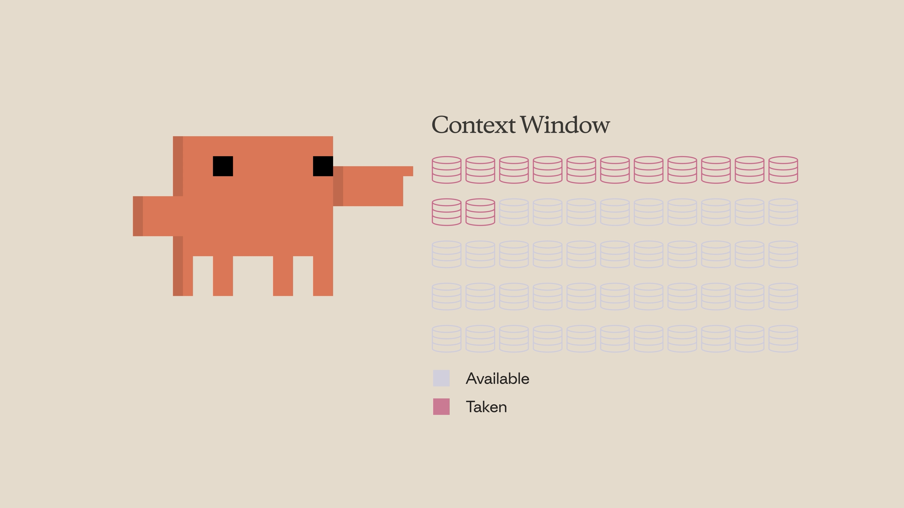
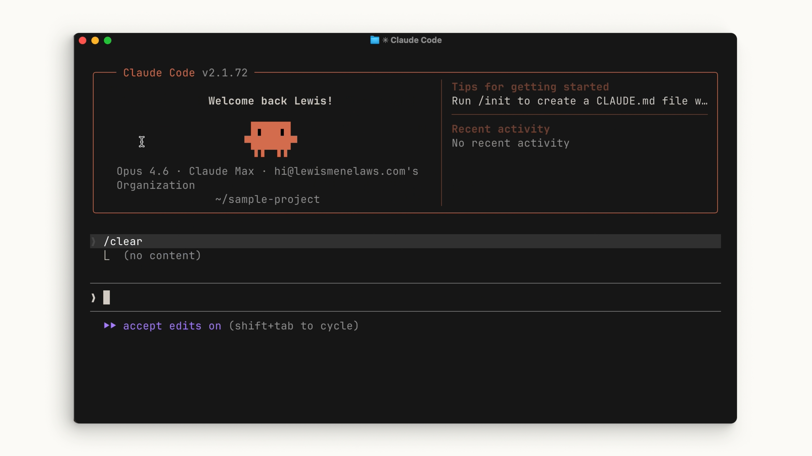
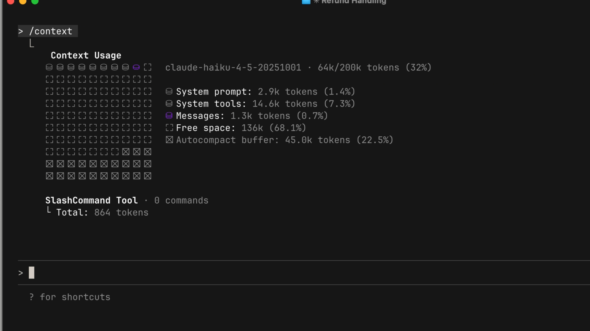

01 — Be specific
具体的に指示する
ここに皮肉がある。曖昧なプロンプトは一見小さく見えて、長期的にはより多くのコンテキストを消費する。明確な指示がなければ、Claude はコードベースをより多く探索し、自分で推論しなければならない——それは詳しいプロンプト1〜2文よりはるかに高くつく。
Lesson 05 / Anthropic 公式動画
03:30 · 全文書き起こし＋公式コース本文より
コンテキストは Claude の作業メモリ。読んだファイル、実行したコマンド、送ったメッセージ——すべてが場所を取る。この回は、その残量をどう見て、いつ圧縮し、いつ捨てるかを扱う。長いセッションが失速するかどうかは、だいたいここで決まる。
コンテキストウィンドウとは、Claude がメモリに保持できる容量のこと。そこに入っていくものが具体的に列挙される。
とくに見落とされやすいのが最後の2つ。ツールを1回呼ぶたびに、呼び出しとその結果の両方が積まれていく。容量には限りがあるため、その使い方を最適化することが重要になる。

上限に近づくと、コンテキストウィンドウは自動的に圧縮（compact）される。圧縮がやることは2つ。
会話の中身を短い形に置き換える。
もう参照しない出力を捨てて空き容量を作る。
このプロセスでは詳細が失われる可能性がある。以前の会話の細部が、圧縮後には残っていないことがある。
手動で走らせることもできる。/compact はその時点までの内容をすべて圧縮する。コンテキストの空きを確保しつつ、以前やったことの記憶は残しておきたい場面で便利。

Compacting conversation…前のセッションの記憶を一切持たずに完全にやり直したい場合は /clear。これはすべてを削除して、ゼロから始める。
圧縮との違いははっきりしている。/compact は残すための操作、/clear は捨てるための操作。

/clear の実行結果。会話が空になる。コンテキストの状態を確認するには /context。得られるのは3つ——コンテキストサイズの概要、最も容量を占めているカテゴリ、そしてその内訳を示す視覚的なグラフィック。

/context の出力例。System tools: 14.6k (7.3%) のように、まだ何もしていない段階でもツール定義が容量を食っていることが見て取れる。Autocompact buffer は自動圧縮のために確保された枠。「何が容量を食っているか」がカテゴリ別に出るのがこのコマンドの価値。System tools が大きければ MCP サーバーの入れすぎ、Messages が大きければ会話が長すぎる、と原因が切り分けられる（→ 09 MCP）。
一般的な目安が明快に示される。判断軸は「いま取り組んでいるものが同じ機能かどうか」の一点。
そして両者に共通する備え。セッションをまたいで Claude に憶えておいてほしいことは、CLAUDE.md に書いておく。そうすればゼロから再発見する必要がなくなる。

CLAUDE.md の例。コマンド一覧に加え、**IMPORTANT** Run the test suite EVERY TIME のような譲れないルールが書かれている。詳しくは 06。01 — Be specific
ここに皮肉がある。曖昧なプロンプトは一見小さく見えて、長期的にはより多くのコンテキストを消費する。明確な指示がなければ、Claude はコードベースをより多く探索し、自分で推論しなければならない——それは詳しいプロンプト1〜2文よりはるかに高くつく。
02 — Manage MCP servers
MCP サーバーは、使っていないときでも利用可能なすべてのツール定義をコンテキストに読み込む。現在のプロジェクトと無関係なサーバーはオフにする。代わりに Skills を試す手もある——似た働きをするが、全体を事前にコンテキストへ読み込まない。
03 — Use subagents
サブエージェントはメインと並行して走るが、完全に独立したコンテキストウィンドウを持つ。「認証エンドポイントはどこにあるか？」のように答えだけが必要なタスクでは、サブエージェントが調べて要約だけを返すので、主要なコンテキストがきれいなまま保たれる。
並んでいる3つは、いずれも「コンテキストに入れる前に減らす」という同じ発想の変奏。入力を絞る（具体的に）、常駐を削る（MCP）、外に出す（サブエージェント）。詳しくは 07 サブエージェント、08 スキル、09 MCP。
長いセッションを要約するには /compact、最初からやり直すには /clear。
コンテキストウィンドウを効果的に使うには、プロンプトを具体的にすること、いま何が容量を消費しているかを確認すること、そして結果だけが必要なタスクはサブエージェントに委任すること。
YouTube の自動生成字幕から取得したもの。スラッシュコマンドは音声で「slash compact」と読まれるため、{slash} と補って表記している。
Context is Claude's working memory. Every file it reads, every command it runs, every message you send, it all takes up space in the context window. Think of the context window as the amount of space that Claude can hold in
its memory. Whenever you enter a prompt, Claude reads a file, runs a tool call, gets a tool call result. This is added onto the context window. And since there's only a finite amount you can put in the
context window, it becomes extremely important to optimize this as much as possible. Now, when you approach this limit, the context window is automatically compacted. Compaction will summarize important
details and remove the unnecessary tool call results and free up a lot of space in your context window. Do note though that this could potentially lose details in your previous conversation. You can run the compaction manually as
well with the {slash} compact command. This will compact everything that you've done up to that point, which could be handy if you want to clear up context space, but also have a memory of what
you previously worked on. If you want to completely start from scratch without memory of what was previously worked on, you can also run {slash} clear and that will remove everything, starting from scratch.
To check the state of your context, run the {slash} context command. Here, you'll get a big picture of how large your context size is, the different categories that are taking up the most context, and a graphic showing you all
of this. A general rule of thumb is when you're working on a specific feature and are going over the context window, but need to continue, then compact. Keeping the context relevant for this feature is important when continuing
development. If you have finished the plan and want to start on a new feature, then clear. You don't want the previous conversation to present bias in anything new that you want to create. For things that you do
want Claude to remember in other sessions, put it in the Claude.md file. That way, it doesn't have to rediscover things from scratch all over again. Be specific. The irony behind writing a smaller prompt is that it in the long
run, it will take up more context. Without being explicit, Claude is forced to look around your code base more and do his own thinking, which takes up a lot more context window space than if you were just a little bit more clear
with a sentence or two. MCP servers load all of the tools available into context by default. So, if you have a lot of MCP servers for things that are unrelated to the project, it might be worth turning them
off. You can also try out skills, which works similarly to MCP servers, but doesn't put the entire thing into context, saving you space. Sub agents run in parallel with your main agent, but has a complete separate
context window. So, for tasks that require an answer without the journey, like where is the authentication endpoints located, you can have the sub agent do the work and return just a summary to your main agent.
Managing context within Claude code is crucial. Use /compact to summarize long sessions and /clear to start fresh. To use your context window effectively, be specific with what you want. >> [music]
>> Check what's using your current context window and use sub agents to delegate tasks you only need the answer for.